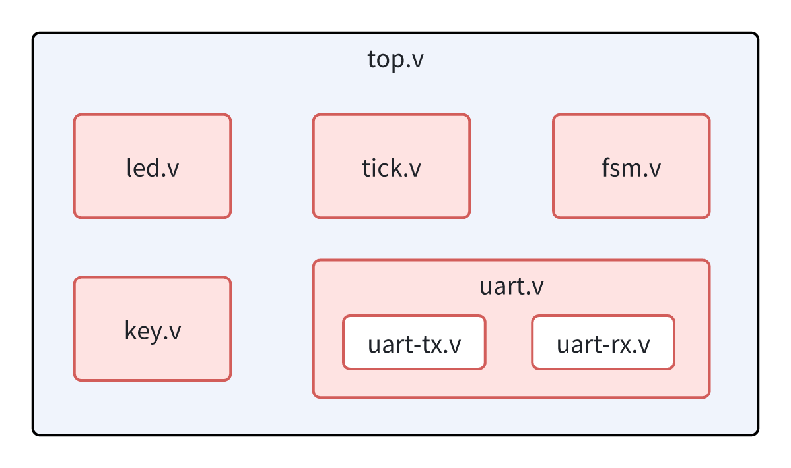
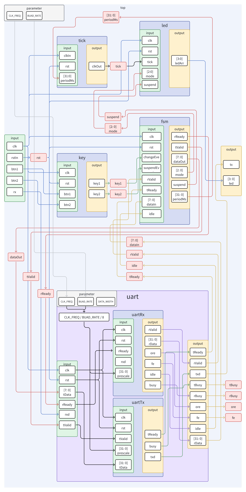
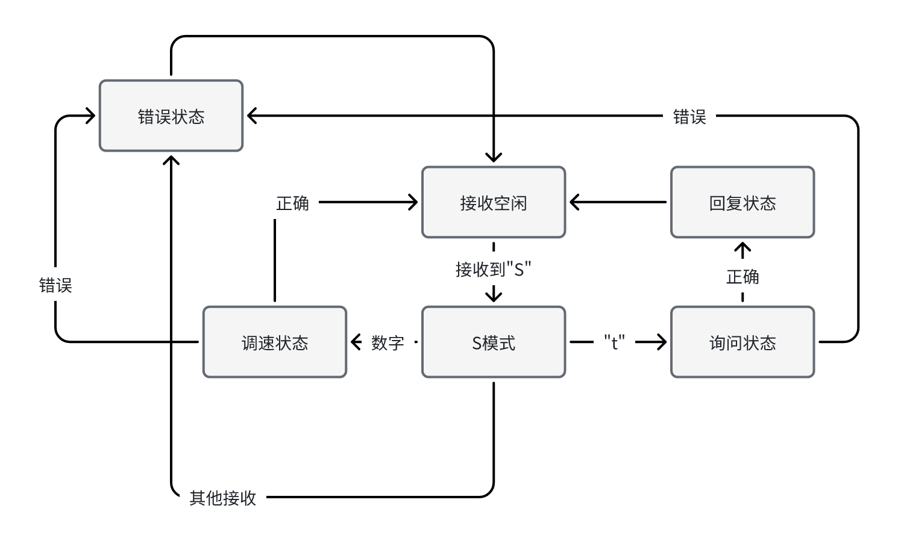

FPGA原理与设计
设计报告
第五组
李嘉豪
3023234059
张晨
3023234088
杨紫翔
3023234063
施云峰
3023234002
李牧泽
3023234060
李长龙
3023234062
作业要求基于PYNQ-Z2 FPGA开发板，通过按键与串口两种方式控制LED的显示方式，从而实现多种流水灯效果，并且能够将设备当前状态通过串口反馈到上位机。由于整个系统涉及到多个输入，比较复杂的状态控制，以及状态的输出，因此具有一定的复杂性。 虽然将整体项目放在一个文件中整体实现在理论上来讲确实具有可行性，但是会让控制逻辑和代码高度耦合，显然会对代码的编写与功能调试产生很大的阻碍。并且小组成员没有办法同时进行开发，降低了开发效率。因此我们认为可以将整个项目进行功能划分，在不同模块中单独实现。多模块的解耦设计需要我们从面向实现设计代码转为面向接口设计，意味着只要我们事先设计好每个模块的接口，就可以实现所有开发与功能测试单独进行。通过解耦设计，使得各个功能模块的职责明确、逻辑清晰，极大简化了工程管理与代码设计。并且，Verilog的代码组织方式也是天然支持这种模块化设计方式，能够很清晰地划分不同模块的边界并且优雅地组合在一起。
系统功能的拆分与单独模块的设计也有很多种方案。按GoF设计模式中的单一职责原则来说，每个模块所负责的功能必须单一，这样对于这个模块的修改将会减少对于其他模块的影响。我们将系统分为如下几个单一职责：
虽然模块职责最小化能够简化模块的设计，但是如果数量过多，模块之间的衔接处理反而会增加系统的开发难度。并且在作业要求这个环境下，有些功能就是不需要进行改动的，为了扩展与变化进行的解耦在某些方面没有必要，只会让代码更加繁琐。因此在权衡了系统复杂程度，小组成员分工，功能耦合程度之后，我们将整个系统拆分成如下几个模块
整个项目的源文件组织结构如下

除此之外，为了规避多人合作开发中会遇到的各种麻烦与问题，我们统一指定了代码开发规范，包括注释规范，命名规范，接口规范。这些规范能够很好地帮助我们了解别人的代码。我们提高了代码可读性，不论是之后的调试，扩展，还是功能修改都感受到了很大帮助。并且在现在的作业展示环节，统一开发规范的好处依然能够体现出来，我们将在之后的篇章里清晰优雅地展现我们的工作成果😊。
对于小组多人合作开发，以及为了隔离开发过程中在调试与验证的过程中对于需求的变化，设计好每个模块对外暴露的接口显然是首先应该确定的事情。下面展示的是各个模块的接口定义以及整体框架的架构示意图。

上图中标注了所有模块的输入输出接口以及之间的关联关系。最外层是一个top.v构建的顶层模块top，实例化了led,tick,fsm,key,uart几个模块，在uart中，则是接着使用了
uartTx与 uartRx两个收发模块。他们之间通过顶层模块的一些内部信号（图中通过红色方框表示）相连。
从整体框架示意图中可以很清楚地看出整个系统的输入与输出。系统需要的输入有：
clk rstIn btn1 btn2 rx 芯片可以通过系统时钟与复位按键完成时序逻辑，并且通过处理外部的两个按键信号以及通过对UART引脚电平的处理接收UART数据，除此之外，芯片还需要发送UART数据以及控制4个LED，这些功能通过两个输出完成
txled整体功能运行过程大致为：Tick模块产生周期脉冲，控制LED模块管理LED状态的位移。这两个模块共同完成流水灯的功能。UART的通信则是通过UART模块与UART-TX，UART-RX两个子模块共同完成。按键的检测处理由Key模块完成。 这些模块的运行状态，或者说整个系统的运行状态都由FSM模块控制，Key模块通过将按键电平信号转为事件向FSM模块发送外部输入，UART模块通过UART-RX子模块实现外部UART的输入，并且将输入数据发送到FSM处。FSM负责处理这些事件，解析串口数据，调整流水灯运行模式， 以及控制Tick模块的运行周期，并且使UART模块通过UART-TX模块将状态信息发送回上位机，完成整个任务要求。
`timescale 1ns / 1ps
/**
*******************************************************************************
* @file top.v
* @brief 顶层模块
*******************************************************************************
* @attention
*
* none
*
*******************************************************************************
* @note
*
* =============================================================================
* input
* =============================================================================
*
* (+) clk: 系统时钟信号
* (+) rstIn: 外部复位信号
* (+) btn1: 外部按键信号1
* (+) btn2: 外部按键信号2
* (+) rx: 串口接收引脚
*
* =============================================================================
* output
* =============================================================================
*
* (+) led: LED控制信号输出
* (+) tx: UART发送引脚
*
*******************************************************************************
* @author MekLi
* @date 2025/12/19
* @version 1.0
*******************************************************************************
*/
module top #(
parameter CLK_FREQ = 125_000_000,
parameter BUAD_RATE = 9600
) (
input wire clk,
input wire rstIn,
input wire btn1,
input wire btn2,
input wire rx,
output wire tx,
output wire [3:0] led
);
/* ----------- 1. Internal Signals ---------------------------------------*/
wire tick;
wire [31:0] periodMs;
wire [2:0] mode;
wire sus;
wire eventChange;
wire rst;
/* uart */
wire [7:0] dataOut;
wire [7:0] dataIn;
wire tValid;
wire rValid;
wire tReady;
wire rReady;
wire tBusy;
(* KEEP = "TRUE" *) wire rBusy;
wire rxOverrunErr;
wire rxFrameErr;
(* KEEP = "TRUE" *) wire rxIdle;
/* ----------- 2. Sub-Modules --------------------------------------------*/
/* 分频 */
tick tickIns (
.clkIn(clk), // 时钟输入
.rst(rst), // 复位
.periodMs(periodMs), // 周期ms
.clkOut(tick) // 时钟输出
);
led ledIns (
.clk(clk),
.rst(rst),
.tick(tick),
.mode(mode),
.suspend(sus),
.ledArr(led)
);
key keyIns (
.clk (clk),
.rst (rst),
.btn1(btn1),
.btn2(btn2),
.key1(key1),
.key2(key2)
);
/*
* @brief 状态机
* @input changeEvent 输入事件
* @input suspendEvent 输出事件
* @input rVali
*/
fsm #(
.CLK_FREQ (CLK_FREQ), /*主时钟频率 */
.PERIOD_MS(500) /* 周期 */
) fsmIns (
.clk(clk),
.rst(rst),
/* event */
.changeEvent(key1),
.suspendEvent(key2),
/* uart */
.rValid(rValid), /* 接收一个Byte读取有效 */
.rReady(rReady), /* 接收准备完成 */
.tValid(tValid), /* 使能写入 */
.tReady(tReady), /* 写入准备完成 */
.dataIn(dataIn), /* 接收的字节 */
.dataOut(dataOut), /* 输出的字节 */
.idle(rxIdle),
/* status */
.mode(mode),
.suspend(sus),
.periodMs(periodMs)
);
uart #(
.CLK_FREQ (CLK_FREQ),
.BUAD_RATE(BUAD_RATE)
) uartIns (
.clk(clk),
.rst(rst),
/*
input
*/
.tData(dataOut),
.tValid(tValid),
.tReady(tReady),
/*
output
*/
.rData(dataIn),
.rValid(rValid),
.rReady(rReady),
/*
uart interface
*/
.rxd(rx),
.txd(tx),
/*
status
*/
.tBusy(tBusy),
.rBusy(rBusy),
.ore(rxOverrunErr),
.idle(rxIdle),
.fe(rxFrameErr)
);
/* ----------- 3. Combinational Logic ------------------------------------*/
assign rst = rstIn;
/* ----------- 4. Sequential Logic ---------------------------------------*/
endmodule
通过定义 CLK_FREQ与 BUAD_RATE可以快速调节系统主频与波特率需求。下层的这些模块的重要初始化量都是通过这些参数进行配置，并且会被上层文件的同名参数覆盖。这么做的原因是当时借用了别的型号的板子进行测试，为了让代码能够在两个板子上快速完全地切换，通过定义参数的方式快速调整平台。
并且两个板子的按键电平不一样，对于复位信号的调整也需要进行处理。因此将外部的复位按键状态与系统模块的复位信号分离开，内部模块只按照系统内的复位信号的有效值为准，有效值固定高电平，不会改变，需要改变的是内部信号与外部复位按键状态的组合逻辑，通过调节
rstIn与 rst的组合逻辑关系，可以快速地适配不同的按键结构。
LED模块一共对外暴露了六个信号接口
clk rstticktick 有效时，模块根据当前工作模式对 LED 显示状态进行更新。
modemode
的取值选择相应的显示逻辑，并在 tick信号到达时更新 LED 状态。
suspendtick 信号，从而实现 LED 显示的暂停功能
ledArrtick、mode 及 suspend
等控制信号共同决定。
`timescale 1ns / 1ps
/**
*******************************************************************************
* @file led.v
* @brief LED模块文件,负责LED模块的状态切换
*******************************************************************************
* @attention
*
* none
*
*******************************************************************************
* @note
*
* =============================================================================
* input
* =============================================================================
*
* (+) clk: 系统时钟信号
* (+) rst: 复位信号，高电平有效
* (+) tick: LED切换信号，上升沿有效
* (+) mode: LED状态，取值[0, 1, 2]有效
* (+) suspend: LED切换挂起信号，高电平有效
*
* =============================================================================
* output
* =============================================================================
*
* (+) ledArr: LED控制信号输出
*
*******************************************************************************
* @author 张晨 & 施云峰
* @date 2025/12/19
* @version 1.0
*******************************************************************************
*/
module led (
input wire clk,
input wire rst,
input wire tick,
input wire [2:0] mode,
input wire suspend,
output reg [3:0] ledArr
);
/* ----------- 1. Internal Signals ---------------------------------------*/
reg lastTick;
reg direction;
/* ----------- 2. Sub-Modules --------------------------------------------*/
/* ----------- 3. Combinational Logic ------------------------------------*/
/* ----------- 4. Sequential Logic ---------------------------------------*/
always @(posedge clk or posedge rst) begin
if (rst) begin
lastTick <= 1'b0;
direction <= 1'b0;
ledArr <= 4'b0000;
end else begin
if (ledArr == 4'b0000) begin
ledArr <= 4'b0001;
end
lastTick <= tick;
if (!suspend && (~lastTick & tick)) begin
case (mode)
// 模式0 向左移动
2'b00: begin
direction <= 1;
ledArr <= {
ledArr[2:0],
ledArr[3]
}; // 循环左移
end
// 模式1 向右移动
2'b01: begin
// 最好同步调整跑马灯时候的方向设置
direction <= 0;
ledArr <= {
ledArr[0],
ledArr[3:1]
};
end
// 模式2 跑马灯
2'b10: begin
ledArr <=
direction
? ( {ledArr[0], ledArr[3: 1]})
: ({ledArr[2: 0], ledArr[3]});
direction <=
(ledArr == 4'b0100)
? 1
: ((ledArr == 4'b0010)
? 0
: direction);
end
default: ;
endcase
end
end
end
endmodule
LED模块的功能很清晰，就是在判断当前没有被停止的状态下，在mode信号的指导下，基于tick信号触发进行LED的状态切换。 模块内有两个内部信号分别是lastTick与direction，具体功能在下文描述。 时序逻辑也非常简单，最先判断rst复位信号是否有效，如果不是在复位状态判断led是否都是灭的。因为之后的所有逻辑都是通过对ledArr进行循环位移实现的而不是直接赋值，所以刚刚复位之后，在所有灯都是灭的时候，需要单独判断一下，并且手动直接赋值，点亮其中一颗LED。点亮之后就是通过lastTick内部信号与tick信号判断是否存在上升沿。如果有上升沿，说明该进行一次LED的状态切换。通过判断mode的值进入不同的控制分支。
0模式下控制LED的语句如下：
ledArr <= {ledArr[2: 0], ledArr[3]}; // 循环左移语句可以将原本ledArr的低三位移动到高三位，并且将最高位移动到最低位，完成一次循环左移。这样的操作要比通过加减计数值判断点亮第几颗灯逻辑上更加简单，更加安全，不容易出错。1模式下进行LED右移的操作是一样的。在2模式下则需要先对direction进行判断，direction就是用来记录当前LED移动方向的变量。对于direction的控制则需要特殊注意：
direction <=
(ledArr == 4'b0100)
? 1
: ((ledArr == 4'b0010)
? 0
: direction);
如果当前的ledArr为0100也就是在下一次就要移动到边沿的时候就需要提前进行direction的改变。如果在1000时候再控制direction切换方向实际上已经迟了。因为时序逻辑的<=操作都是并行操作，当1000时修改完direction之后LED的切换依旧是基于旧的direction。因此需要在边沿的上一个LED进行direction从左向右的改变。当LED移动到右边沿时候同理。因此判断的时候通过两个三元操作符先后判断了当前是否是0100与0010状态而不是1000与0001。 在mode为0或者1的时候的切换不需要依据direction。但是在这两个模式下的分支依然做了direction的赋值操作。为的是能够让LED在从0模式或者1模式切换到2模式的时候，能够保持上一个模式的状态。如果不这样做，direction里保持的是上一次2模式下的状态，如果上一次2模式在向右移动的时候被切换到了0模式，开始向左移动。再切换回到2模式的时候并不会继续向左，而是基于direction突然改变方向向右移动。因此为了让LED的移动更加顺滑，去除这些突兀的转移，在0模式与1模式中也对direction进行了处理。
tick 模块用于在任意时钟 clkIn 的基础上，根据外部配置的分频系数 periodMs 产生一个分频脉冲信号 clkOut。 该节拍信号用于驱动 LED 状态更新等周期性事件，从而实现可配置周期的事件触发机制。在LED的流水切换与UART的采样上都需要用到时钟分频，本身打算都使用tick模块提供。后来UART舍弃了外部的时钟触发方式，内部自行实现采样时钟。
clkIn rst periodMs clkOut
`timescale 1ns / 1ps
/**
*******************************************************************************
* @file tick.v
* @brief Tick模块，用于时钟分频
*******************************************************************************
* @attention
*
* none
*
*******************************************************************************
* @note
*
* =============================================================================
* input
* =============================================================================
*
* (+) clkIn: 分频前时钟
* (+) rst: 复位信号，高电平有效
* (+) preiodMs:分频系数
*
* =============================================================================
* output
* =============================================================================
*
* (+) clkOut: 分频之后的脉冲
*
*******************************************************************************
* @author 张晨 & 施云峰
* @date 2025/12/19
* @version 1.0
*******************************************************************************
*/
module tick(
input wire clkIn,
input wire rst,
input wire [31:0] periodMs,
output reg clkOut
);
/* ----------- 1. Internal Signals ---------------------------------------*/
reg [31:0] cnt;
/* ----------- 2. Sub-Modules --------------------------------------------*/
/* ----------- 3. Combinational Logic ------------------------------------*/
/* ----------- 4. Sequential Logic ---------------------------------------*/
always @(posedge clkIn or posedge rst) begin
// 复位键按下
if (rst) begin
cnt <= 0;
clkOut <= 1'b0;
end else if (cnt >= periodMs) begin
cnt <= 0;
clkOut <= 1'b1;
end else begin
cnt <= cnt + 1;
clkOut <= 1'b0;
end
end
endmodule
tick模块首先判断复位信号是否有效，如果不是复位状态，则进行计数，当计数值达到periodMs之后，将脉冲输出拉高一个时钟，然后清空计数，拉低输出，开始下一个循环
key 模块用于对来自物理按键的输入信号进行同步、防抖处理，并最终输出稳定可靠的按键事件脉冲信号。 由于机械按键在按下与释放过程中会产生明显的抖动现象，若直接将按键输入用于状态机或控制逻辑，易引发误触。因此，本模块通过多级同步、计数延时确认以及边沿检测的方式，对按键信号进行完整的时序处理。 在本工程中，key 模块将物理按键行为抽象为单周期有效的事件信号，供系统状态机（FSM）使用，从而避免上层逻辑直接处理异步、抖动的硬件信号，降低系统复杂度。
clk rst btn1 btn2 key1 key2
`timescale 1ns / 1ps
/**
*******************************************************************************
* @file key.v
* @brief 按键模块，用于处理按键电平并产生事件
*******************************************************************************
* @attention
*
* none
*
*******************************************************************************
* @note
*
* =============================================================================
* input
* =============================================================================
*
* (+) clk: 系统时钟信号
* (+) rst: 复位信号，高电平有效
* (+) btn1: 物理按键引脚1
* (+) btn2: 物理按键引脚2
*
* =============================================================================
* output
* =============================================================================
*
* (+) key1: 物理按键1触发事件，上升沿有效
* (+) key2: 物理按键2触发事件，上升沿有效
*
*******************************************************************************
* @author 杨紫翔
* @date 2025/12/19
* @version 1.0
*******************************************************************************
*/
module key (
input wire clk,
input wire rst, // 高有效复位
input wire btn1,
input wire btn2,
output reg key1, // 防抖后的上升沿脉冲
output reg key2
);
/* ----------- 1. Internal Signals ---------------------------------------*/
parameter integer DEBOUNCE_CNT = 500_000; // 10ms @125MHz
reg btn1_ff1, btn1_ff2;
reg btn2_ff1, btn2_ff2;
reg [$clog2(DEBOUNCE_CNT):0] cnt1;
reg [$clog2(DEBOUNCE_CNT):0] cnt2;
reg btn1_stable;
reg btn2_stable;
reg btn1_last;
reg btn2_last;
/* ----------- 2. Sub-Modules --------------------------------------------*/
/* ----------- 3. Combinational Logic ------------------------------------*/
/* ----------- 4. Sequential Logic ---------------------------------------*/
always @(posedge clk or posedge rst) begin
if (rst) begin
btn1_ff1 <= 1'b0;
btn1_ff2 <= 1'b0;
btn2_ff1 <= 1'b0;
btn2_ff2 <= 1'b0;
end else begin
btn1_ff1 <= btn1;
btn1_ff2 <= btn1_ff1;
btn2_ff1 <= btn2;
btn2_ff2 <= btn2_ff1;
end
end
always @(posedge clk or posedge rst) begin
if (rst) begin
cnt1 <= 0;
cnt2 <= 0;
btn1_stable <= 1'b0;
btn2_stable <= 1'b0;
end else begin
// ---- btn1 ----
if (btn1_ff2 == btn1_stable) cnt1 <= 0;
else if (cnt1 < DEBOUNCE_CNT) cnt1 <= cnt1 + 1'b1;
else begin
cnt1 <= 0;
btn1_stable <= btn1_ff2;
end
// ---- btn2 ----
if (btn2_ff2 == btn2_stable) cnt2 <= 0;
else if (cnt2 < DEBOUNCE_CNT) cnt2 <= cnt2 + 1'b1;
else begin
cnt2 <= 0;
btn2_stable <= btn2_ff2;
end
end
end
always @(posedge clk or posedge rst) begin
if (rst) begin
btn1_last <= 1'b0;
btn2_last <= 1'b0;
key1 <= 1'b0;
key2 <= 1'b0;
end else begin
key1 <= (~btn1_last) & btn1_stable; // 上升沿
key2 <= (~btn2_last) & btn2_stable;
btn1_last <= btn1_stable;
btn2_last <= btn2_stable;
end
end
endmodule
模块定义了一个局部参数 DEBOUNCE_CNT用于记录按键的有效时间。这个局部参数不能被上层修改。
通过系统函数 $clog2(DEBOUNCE_CNT)自动计算出用于延时的计数器需要的位数。
Key模块主要由三个时序逻辑组成
第一个时序逻辑负责判断复位信号以及两级按键电平的状态保存。
第二个时序中，如果 ff2 stable，意味着已经重新开始一次新的触发，开始
cnt数器的计数，直至达到预设延时时间，在这期间如果 ff2为抖动重新回到了上一个电平状态，意味着 ff2 stable等，将会将计数器 cnt空，重新准备计时。如果稳定地等到了计数完成，则认为是一次有效的电平转换，重新改变
stable的值并清空cnt准备下一次的计数。
第三个时序负责初始事件输出与物理按键电平之间的关系。通过不断检测 stable last值判断是否产生上升沿。如果存在上升沿则拉高
key，输出按键事件脉冲，随后拉低 key
UART-TX模块主要是用于在接收到使能信号之后将8位数据寄存器内的数据以UART的方式发送出去。并且在发送过程中拉低状态信号表示忙碌，在发送完成之后拉高状态信号通知其他上层模块,模块 暴露的接口有
clk rst tData tValid tReady txd prescale busy
`timescale 1ns / 1ps
/**
*******************************************************************************
* @file uart-tx.v
* @brief 用于将数据寄存器中的数据通过txd发送出去
*******************************************************************************
* @attention
*
* tValid使能信号只能拉高一个时钟周期，不能持续拉高
*
*******************************************************************************
* @note
*
* =============================================================================
* input
* =============================================================================
*
* (+) clk: 系统时钟信号
* (+) rst: 复位信号，高电平有效
* (+) tData: 发送数据
* (+) tValid: 发送使能信号
* (+) prescale:波特率分频系数
*
* =============================================================================
* output
* =============================================================================
*
* (+) txd: 串口发送引脚
* (+) tReady: 发送准备完成
* (+) busy: 忙碌状态信号
*
*******************************************************************************
* @author 李牧泽
* @date 2025/12/19
* @version 1.0
*******************************************************************************
*/
module uartTx #(
parameter DATA_WIDTH = 8
) (
input wire clk,
input wire rst,
/* input */
input wire [DATA_WIDTH-1:0] tData,
input wire tValid,
output wire tReady,
/* UART Interface */
output wire txd,
input wire [ 31:0] prescale,
output wire busy
);
/* ----------- 1. Internal Signals ---------------------------------------*/
reg tReadyReg = 0;
reg txdReg = 0;
reg busyReg = 0;
reg [DATA_WIDTH:0] dataReg = 0;
reg [31:0] prescaleReg = 0;
reg [3:0] bitCnt = 0;
/* ----------- 2. Sub-Modules --------------------------------------------*/
/* ----------- 3. Combinational Logic ------------------------------------*/
assign tReady = tReadyReg;
assign txd = txdReg;
assign busy = busyReg;
/* ----------- 4. Sequential Logic ---------------------------------------*/
always @(posedge clk or posedge rst) begin
if (rst) begin
tReadyReg <= 0;
txdReg <= 1;
prescaleReg <= 0;
bitCnt <= 0;
busyReg <= 0;
end else begin
if (prescaleReg > 0) begin
tReadyReg <= 0;
prescaleReg <= prescaleReg - 1;
end else if (bitCnt == 0) begin
tReadyReg <= 1;
busyReg <= 0;
// 逻辑起始
if (tValid) begin
tReadyReg <= !tReadyReg;
prescaleReg <= (prescale << 3) - 1;
bitCnt <= DATA_WIDTH + 1;
dataReg <= {1'b1, tData};
txdReg <= 0;
busyReg <= 1;
end
end else begin
if (bitCnt > 1) begin
bitCnt <= bitCnt - 1;
prescaleReg <= (prescale << 3) - 1;
{dataReg, txdReg} <= {1'b0, dataReg};
end else if (bitCnt == 1) begin
bitCnt <= bitCnt - 1;
prescaleReg <= (prescale << 3);
txdReg <= 1;
end
end
end
end
endmodule
发送模块没有使用特殊的状态寄存器用于记录串口发送事务的状态转移，而是通过计数的方式自然完成分频与8bit电平发送。
prescaleReg就是用于分频的计数寄存器，prescaleReg的时候，并且开没有开始一次发送事务(即 bitCnt为零),会持续检测
tValid信号。如果 tValid被拉高，模块开始一次发送事务
进入发送事务首先会开始各种参数的初始化，会将 tReady信号拉低，表示当前不可开始下一次发送事务，并且开始将分频计数装填到
prescaleReg中，bitCnt中存入一次发送事务需要的电平翻转数量，一般是8bit加上一个起始位。并且发送数据被装填到数据寄存器dataReg中。
prescaleReg在被装填上分频计数值之后会持续自减，直到归零，并且 bitCnt当前不为零，因此会进入发送逻辑， bitCnt首先减一，表示完成一位发送，重新装填分频计数器 prescaleReg，将数据寄存器 dataReg中的最低位移出到
txdReg中，用于控制发送引脚电平。
如果当前的 bitCnt已经减到1，说明完成所有的数据发送，这时完成重装填之后会将
txdReg拉高表示停止位。
当 prescaleReg与 bitCnt全部归零之后表示一次发送事务完成，此时模块将
tReadyReg置位，表示当前可以开始下一次的发送事务。
UART-RX模块用于串口接收引脚的电平采样，通过8倍过采样检测电平数据，并将采样得到的数据记录到数据缓冲区中，除此之外，接收模块还会通过一些信号向上层发送状态，比如接收事务处理状态，空闲状态，帧错误与帧溢出错误。
clk rst rData rValid rReady rxd busy ore fe idle prescale
`timescale 1ns / 1ps
/**
*******************************************************************************
* @file uart-rx.v
* @brief 在上层处理完数据之前接收信号将会一直拉高
*******************************************************************************
* @attention
*
* rValid信号为上升沿有效
*
*******************************************************************************
* @note
*
* =============================================================================
* input
* =============================================================================
*
* (+) clk: 系统时钟信号
* (+) rst: 复位信号，高电平有效
* (+) rReady: 判断上层是否处理完成
* (+) rxd: 数据接收引脚
* (+) prescale:分频系数
*
* =============================================================================
* output
* =============================================================================
*
* (+) rData: 数据接收缓冲区
* (+) rValid: 一次数据接收完成
* (+) busy: 处理接收事务中
* (+) ore: 数据溢出错误
* (+) fe: 帧错误
* (+) idle: 串口空闲事件
*
*******************************************************************************
* @author 李长龙
* @date 2025/12/19
* @version 1.0
*******************************************************************************
*/
module uartRx #(
parameter DATA_WIDTH = 8
) (
input wire clk,
input wire rst,
/*
output
*/
output wire [DATA_WIDTH - 1:0] rData,
output wire rValid,
input wire rReady,
/*
uart interface
*/
input wire rxd,
(* KEEP = "TRUE" *) output wire busy,
output wire ore,
output wire fe,
output wire idle,
input wire [ 31:0] prescale
);
/* ----------- 1. Internal Signals ---------------------------------------*/
reg [DATA_WIDTH - 1:0] rDataReg = 0;
reg rValidReg = 0;
reg rxdReg = 1;
reg busyReg = 0;
reg oreReg = 0;
reg feReg = 0;
reg [ DATA_WIDTH-1:0] dataReg = 0;
reg [ 31:0] prescaleReg = 0;
reg [ 3:0] bitCnt = 0;
reg idleReg = 0;
reg [ 31:0] idleCounter = 0;
/* ----------- 2. Sub-Modules --------------------------------------------*/
/* ----------- 3. Combinational Logic ------------------------------------*/
assign rData = rDataReg;
assign rValid = rValidReg;
assign busy = busyReg;
assign fe = feReg;
assign ore = oreReg;
assign idle = idleReg;
/* ----------- 4. Sequential Logic ---------------------------------------*/
always @(posedge clk or posedge rst) begin
if (rst) begin
rDataReg <= 0;
rValidReg <= 0;
rxdReg <= 0;
prescaleReg <= 0;
bitCnt <= 0;
busyReg <= 0;
oreReg <= 0;
feReg <= 0;
end else begin
rxdReg <= rxd;
oreReg <= 0;
feReg <= 0;
if (rValid && rReady) begin
rValidReg <= 0;
end
// 分频计数
if (prescaleReg > 0) begin
prescaleReg <= prescaleReg - 1;
end else if (bitCnt > 0) begin
// 正在处理一帧
if (bitCnt > DATA_WIDTH + 1) begin
// 起始位判断
if (!rxdReg) begin
// 帧计数-1
bitCnt <= bitCnt - 1;
// 重装8倍预分频
prescaleReg <= (prescale << 3) - 1;
end else begin
// rx线上不能为高，否则就是错误判断，伪起始位
bitCnt <= 0;
prescaleReg <= 0;
end
end else if (bitCnt > 1) begin
// 数据位中点采样
bitCnt <= bitCnt - 1;
prescaleReg <= (prescale << 3) - 1;
dataReg <= {rxdReg, dataReg[DATA_WIDTH-1:1]};
end else if (bitCnt == 1) begin
// 停止位判断
bitCnt <= bitCnt - 1;
if (rxdReg) begin
rDataReg <= dataReg;
rValidReg <= 1;
oreReg <= rValidReg;
end else begin
feReg <= 1;
end
end
end else begin
// 空闲状态，等待起始位
busyReg <= 0;
// 检测到上升沿
if (!rxdReg) begin
// 重装
prescaleReg <= (prescale << 2) - 2;
bitCnt <= DATA_WIDTH + 2;
dataReg <= 0;
busyReg <= 1;
end
end
end
end
// 空闲状态判断，做不定长接收
always @(posedge clk or posedge rst) begin
if (rst) begin
idleCounter <= 0;
idleReg <= 0;
end else if (busy) begin
idleCounter <= 0;
idleReg <= 0;
end else if (idleCounter < 2 * (prescale << 3) - 1) begin
/* 计算空闲状态的时间 */
idleCounter <= idleCounter + 1;
idleReg <= 0;
end else if (idleCounter == 2 * (prescale << 3) - 1) begin
/* 如果空闲状态时间超过一个bit的持续时间，认为是空闲状态 */
idleReg <= 1;
end
end
endmodule
UART-RX模块有两个时序逻辑，分别用于接收串口时候的TTL电平采样并接收数据以及根据接收状态判断是否是空闲状态。
串口数据接收的逻辑中，在没有复位的情况下，先判断 prescaleReg是否是空的。如果有值则继续减一计数，等待完成。如果已经完成计数，则会根据
bitCnt判断当前是否有数据位需要处理。
bitCnt中如果也是空的，并且检测到了接收引脚上有上升沿，说明当前处于新数据帧接收的开始。于是开始初始化各个寄存器，先装填分频计数寄存器，装填的大小为半个bit接收的时间，用于之后的中点位置的电平采样。也就是将会先延迟0.5个波特周期。并且会将bitCnt装填为 DATA_WIDTH + 2
，这是因为除了数据位需要接收之外，还需要处理起始位与结束位的判断。当完成半个bit周期的延时之后，开始进行电平采样，这时候如果发现采样的电平不是低电平，说明起始位是错误的，将之前配置的寄存器清空进行复位。如果检测到
rxd正是
低电平，符合一个起始位的电平特征，于是继续 rxd的电平采样，并且给分频计数器装填1个bit的计数值，由于当前处于一个bit周期的中间，因此每次装填1个周期计时完成之后都是在数据位的中点处进行采样。当分频计数器完成计数，开始进行中点的电平采样，并且重新装填
prescaleReg与 bitCnt。
完成所有数据位的接收之后开始进行停止位的判断，即判断 bigCnt是否为1。在
bitCnt == 1的时候进行 rxd上的电平采样，如果是高电平，符合停止位的电平协议，输出数据寄存器的值到缓冲区中，并且将
rValid拉高说明完成了一次接收。如果不是，说明帧错误。
对于ORE的判断，则是通过上一次的 rValid与 rReady。如果 rValid与 rReady同时拉高，说明上层已经处理完成数据并且准备好接受新的数据，模块会将
rValid拉低直到下一个新的数据到来。如果 rValid
一直都是高电平，ore信号在数据帧接收完成之后也会被赋给高电平，说明出现了数据溢出的错误。
串口空闲的判断则是通过 busy信号判断，如果为低，说明当前没有在处理数据接收事务，但是有可能是在下一个字节处理的间隙，因此需要进行计时，通过等待两个字节的时间，判断是否真的没有下一个字节数据发送过来。如果成立，拉高
idle信号表示当前窗口为空闲状态。
FSM模块是整个系统的核心控制单元，负责统一管理按键事件、串口命令解析、系统运行状态以及状态信息的串口反馈。 该模块通过状态机的方式，对来自不同输入源（按键与 UART）的控制指令进行仲裁与处理，并将最终的控制结果以清晰、稳定的接口形式输出给 LED 控制模块和Tick模块。 从系统结构上看，FSM 模块位于功能调度层，不直接驱动外设，而是通过输出 mode、suspend 和 periodMs 等状态信号，对下层功能模块进行统一配置，从而实现逻辑解耦和职责划分。 FSM 模块主要完成以下功能：
接口定义如下:
clk rst changeEvent suspendEvent rValid dataIn 中的数据为新接收到的有效字节。
rReady dataIn idle tValid tReady dataOut mode suspend periodMs
`timescale 1ns / 1ps
/**
*******************************************************************************
* @file fsm.v
* @brief 状态机模块，用于全局状态控制与串口数据处理
*******************************************************************************
* @attention
*
* none
*
*******************************************************************************
* @note
*
* =============================================================================
* input
* =============================================================================
*
* (+) clk: 系统时钟信号
* (+) rst: 复位信号，高电平有效
* (+) changeEvent: 状态改变事件，上升沿有效
* (+) suspendEvent:挂起事件，上升沿有效
* (+) rValid: 串口数据接收事件
* (+) tReady: 串口发送准备完成
* (+) dataIn: 接收缓冲区
* (+) idle: 串口空闲状态
*
* =============================================================================
* output
* =============================================================================
*
* (+) rReady: 缓冲区已空
* (+) tValid: 串口发送使能
* (+) dataOut: 输出缓冲区
* (+) mode: 运行状态
* (+) suspend: 挂起状态
* (+) periodMs: 延时分频系数
*
*******************************************************************************
* @author MekLi
* @date 2025/12/19
* @version 1.0
*******************************************************************************
*/
`define GET_MAX_COUNT(clkFreq, periodMs) ((clkFreq / 1000) * periodMs)
module fsm #(
CLK_FREQ = 50_000_000,
PERIOD_MS = 500
) (
input wire clk,
input wire rst,
/* event */
input wire changeEvent,
input wire suspendEvent,
/* uart */
input wire rValid, /* 读取有效 */
output wire rReady, /* 接收准备完成 */
output wire tValid, /* 使能写入 */
input wire tReady, /* 写入准备完成 */
input wire [ 7:0] dataIn, /* 接收的字节 */
output wire [ 7:0] dataOut, /* 输出的字节 */
input wire idle,
/* status */
output reg [ 2:0] mode,
output reg suspend,
output wire [31:0] periodMs
);
/* ----------- 1. Internal Signals ---------------------------------------*/
reg chgEntPrevReg = 0; // 上一刻切换事件
reg spndEntPrevReg = 0; //上一刻暂停事件
reg rReadyReg = 1; // 是否启用串口接收
reg [7:0] state = 0; //状态
reg [31:0] periodReg =
`GET_MAX_COUNT(CLK_FREQ, PERIOD_MS); // LED计时间隔
reg [31:0] calcReg = 0; // 计算中间寄存器
reg [7:0] dataReg = 0;
reg tValidReg = 0;
/************************** 接收状态 ******************************/
/* 状态常量 */
localparam PROTOCOL_STATE_IDLE = 0;
localparam PROTOCOL_STATE_S_MODE = 1;
localparam PROTOCOL_STATE_SPEED = 2;
localparam PROTOCOL_STATE_REQUEST = 3;
localparam PROTOCOL_STATE_RESPONSE = 4;
localparam PROTOCOL_STATE_ERROR = 5;
/*
匹配命令：
State of you - 所有状态
*/
localparam PAT_LEN = 11; // 字符串模式长度
reg [7:0] pattern[0:PAT_LEN - 1]; // 模式ROM
initial begin
pattern[0] = "t";
pattern[1] = "a";
pattern[2] = "t";
pattern[3] = "e";
pattern[4] = " ";
pattern[5] = "o";
pattern[6] = "f";
pattern[7] = " ";
pattern[8] = "y";
pattern[9] = "o";
pattern[10] = "u";
end
reg [7:0] matchIndex = 0; // 匹配索引
reg match;
/************************** 发送状态 ******************************/
/*
回复命令：
MODE=n,RUN/PAUSE
*/
reg [7:0] txState = 0;
reg [7:0] txIndex = 0;
localparam TRANSMIT_STATE_IDLE = 0; // 发送空闲状态
localparam TRANSMIT_STATE_MODE = 1; // 发送模式状态
localparam TRANSMIT_STATE_PAUSE = 2; // 发送暂停状态
localparam TRANSMIT_STATE_RUN = 3; //发送运行状态
localparam MODE_VALUE_LEN = 7;
/* 模式字符串 */
reg [7:0] modeString[0:MODE_VALUE_LEN - 1];
initial begin
modeString[0] = "M";
modeString[1] = "O";
modeString[2] = "D";
modeString[3] = "E";
modeString[4] = "=";
modeString[5] = "n";
modeString[6] = ",";
end
/* 运行字符串 */
localparam RUN_STATE_STRING_LEN = 3;
reg [7:0] runStateString[0:RUN_STATE_STRING_LEN - 1]; //运行状态下发送的字符串
initial begin
runStateString[0] = "R";
runStateString[1] = "U";
runStateString[2] = "N";
end
/* 暂停状态字符串 */
localparam PAUSE_STATE_STRING_LEN = 5;
reg [7:0] pauseStateString[0:PAUSE_STATE_STRING_LEN - 1];
initial begin
pauseStateString[0] = "P";
pauseStateString[1] = "A";
pauseStateString[2] = "U";
pauseStateString[3] = "S";
pauseStateString[4] = "E";
end
/* ----------- 2. Sub-Modules --------------------------------------------*/
/* ----------- 3. Combinational Logic ------------------------------------*/
assign rReady = rReadyReg;
assign periodMs = periodReg;
assign dataOut = dataReg;
assign tValid = tValidReg;
/* ----------- 4. Sequential Logic ---------------------------------------*/
/************************ 输入与按键状态机 ************************/
always @(posedge clk or posedge rst) begin
if (rst) begin
mode <= 0;
state <= 0;
chgEntPrevReg <= 0;
spndEntPrevReg <= 0;
suspend <= 0;
periodReg <= `GET_MAX_COUNT(CLK_FREQ, PERIOD_MS);
calcReg <= 0;
matchIndex <= 0;
match <= 0;
end else begin
if (!suspend) begin
/* 按键处理逻辑 */
if (~chgEntPrevReg & changeEvent) begin
if (mode < 2) begin
mode <= mode + 1;
end else begin
// mode不等于3，并且mode大于等于2.
mode <= 0;
end
end
/* 串口数据处理逻辑 */
if (rValid && rReady) begin
/* ASCII 码处理*/
if (dataIn >= "0" && dataIn <= "2") begin
mode <= dataIn - "0";
end
end
end
/* 暂停按键处理 */
if (~spndEntPrevReg & suspendEvent) begin
// 按键二的信号有上升沿
suspend <= ~suspend;
end
/* 串口字节接收回调 */
if (rValid && rReady) begin
case (state)
/* 空闲状态 */
PROTOCOL_STATE_IDLE: begin
if (dataIn >= "0" && dataIn <= "2") begin
mode <= dataIn - "0";
end else if (dataIn == "P" || dataIn == "p") begin
suspend <= 1;
end else if (dataIn == "R" || dataIn == "r") begin
suspend <= 0;
end else if (dataIn == "S") begin
state <= PROTOCOL_STATE_S_MODE;
end
end
/* S 模式 */
PROTOCOL_STATE_S_MODE: begin
/* 进入调速模式 */
if (dataIn >= "0" && dataIn <= "9") begin
state <= PROTOCOL_STATE_SPEED;
calcReg <= calcReg * 10 + (dataIn - "0");
end
/* 进入请求模式 */
if (dataIn == pattern[0]) begin
state <= PROTOCOL_STATE_REQUEST;
match <= 0;
matchIndex <= 1;
end
end
/* 调速状态 */
PROTOCOL_STATE_SPEED: begin
if (dataIn >= "0" && dataIn <= "9") begin
calcReg <= calcReg * 10 + (dataIn - "0");
end else begin
/* 复位 */
calcReg <= 0;
/* 调整为错误状态 */
state <= PROTOCOL_STATE_ERROR;
end
end
/* 询问状态 */
PROTOCOL_STATE_REQUEST: begin
/* 还没有匹配完成，此时match没有置一*/
if (!match && dataIn == pattern[matchIndex]) begin
/* 匹配结束 */
if (matchIndex == PAT_LEN - 1) begin
match <= 1;
matchIndex <= 0;
end else begin
/* 匹配过程，逐个递增 */
matchIndex <= matchIndex + 1;
end
end else begin
/* 这里有几种情况:
match已经置一,说明匹配成功,但是有多余字符,依然判定为错误
match还没有置一,说明匹配过程中已经是出现错误
*/
/* 如果匹配错误了， 索引值归零 */
match <= 0;
matchIndex <= 0;
/* 设置为错误状态 */
state <= PROTOCOL_STATE_ERROR;
end
end
default: ;
endcase
end
/* 调速状态， 并且帧全部接收完成，处于串口空闲状态 */
if (state == PROTOCOL_STATE_SPEED && idle) begin
/* 回到协议的空闲状态 */
state <= PROTOCOL_STATE_IDLE;
periodReg <= `GET_MAX_COUNT(CLK_FREQ, calcReg);
calcReg <= 0;
end
/* 询问状态， 并且帧全部接收完成，处于串口空闲状态*/
if (state == PROTOCOL_STATE_REQUEST && idle && match) begin
/* 无多余字符，说明指令正确，转到回复状态 */
state <= PROTOCOL_STATE_RESPONSE;
/* 复位 */
match <= 0;
matchIndex <= 0;
end
/* 回复状态，触发一次之后回到空闲状态 */
if (state == PROTOCOL_STATE_RESPONSE) begin
state <= PROTOCOL_STATE_IDLE;
end
/* 当接收完整帧之后，再恢复到空闲状态 */
if (state == PROTOCOL_STATE_ERROR && idle) begin
state <= PROTOCOL_STATE_IDLE;
end
end
chgEntPrevReg <= changeEvent;
spndEntPrevReg <= suspendEvent;
end
/***************************** 发送状态机 *****************************/
always @(posedge clk or posedge rst) begin
if (rst) begin
txState <= TRANSMIT_STATE_IDLE;
txIndex <= 0;
dataReg <= 0;
tValidReg <= 0;
end else begin
// 有新的发送请求并且当前发送状态为空闲状态
if (state == PROTOCOL_STATE_RESPONSE
&& txState == TRANSMIT_STATE_IDLE) begin
/* 配制好状态，发送数据，以及发送索引 */
txState <= TRANSMIT_STATE_MODE;
txIndex <= 0;
modeString[5] <= (mode + "0");
end else begin
case (txState)
/* 发送模式状态 */
TRANSMIT_STATE_MODE: begin
if (txIndex == MODE_VALUE_LEN) begin
/* 此时MODE发送完成 */
txIndex <= 0;
/* 模式转移 */
if (suspend) begin
txState <= TRANSMIT_STATE_PAUSE;
end else begin
txState <= TRANSMIT_STATE_RUN;
end
end else if (!tValid && tReady) begin
/* 发送回调 */
dataReg <= modeString[txIndex];
txIndex <= txIndex + 1;
tValidReg <= 1;
end
end
/* 发送暂停状态 */
TRANSMIT_STATE_PAUSE: begin
if (txIndex == PAUSE_STATE_STRING_LEN) begin
/* PAUSE 发送完成 */
txIndex <= 0;
/* 模式转移到空闲 */
txState <= TRANSMIT_STATE_IDLE;
end else if (!tValid && tReady) begin
/* 配置发送 */
dataReg <= pauseStateString[txIndex];
txIndex <= txIndex + 1;
tValidReg <= 1;
end
end
/* 发送运行状态 */
TRANSMIT_STATE_RUN: begin
if (txIndex == RUN_STATE_STRING_LEN) begin
/* PAUSE 发送完成 */
txIndex <= 0;
/* 模式转移到空闲 */
txState <= TRANSMIT_STATE_IDLE;
end else if (!tValid && tReady) begin
/* 配置发送 */
dataReg <= runStateString[txIndex];
txIndex <= txIndex + 1;
tValidReg <= 1;
end
end
default: ;
endcase
end
/* 处理发送信号 */
if (tValid && tReady) begin
tValidReg <= 0;
end
end
end
endmodule
一部分信号虽然是 output但是并没有设定成 reg，而是定义为 wire类型，通过内部的 reg类型的信号控制 output wire。这样做可以通过组合逻辑方便后面的修改与扩展而不需要改动接口。
FSM模块主要是用来做上层的状态转移的逻辑判断。FSM模块不仅需要解析上层的查询指令"State of
you"，与调速指令"Sxxx"等等，并且需要准备向上位机发送的串口字符。FSM模块通过定义 PROTOCOL_STATE_IDLE , PROTOCOL_STATE_S_MODE , PROTOCOL_STATE_SPEED , PROTOCOL_STATE_REQUEST , PROTOCOL_STATE_RESPONSE , PROTOCOL_STATE_ERROR 几个参数用于状态的索引。将"State of
you"几个字符作为常量存储在 pattern数组中。协议发送方面定义了 TRANSMIT_STATE_IDLE , TRANSMIT_STATE_MODE ,
TRANSMIT_STATE_PAUSE , TRANSMIT_STATE_RUN 几个参数用于发送参数的状态索引，并且将发送需要的字符串存入到数组
modeString, runStateString, pauseStateString中。
FSM模块的时序逻辑分为了两个部分，分别控制LED状态与接收状态转移和发送状态转移.
控制LED状态与接收状态转移的部分工作流程如下：
在判断复位信号无效之后判断是否是暂停状态，如果正在运行而不是暂停，则循环检测模式更改事件的上升沿与串口接收信号。前者用于循环递增模式变量，后者用于解析缓冲区数据并根据数据更改模式变量。在这之后还会轮询暂停事件，如果被触发，翻转暂停状态信号
suspend，完成暂停状态与运行状态之间的切换。
后面的逻辑则是串口消息的解析。从普通的IDLE空闲状态开始，如果接收到了数字或者"P",
"R"等直接进行单字节流处理，不需要进行状态的转移。但是如果接收到了"S"，说明之后的指令是多字节指令，需要进行状态转移。由于调速指令"Sxxxx"与询问指令"State
of you"都是S为前缀，因此需要额外设置一个S_MODE用于中间状态，接收到"S"字符之后就会转移到这个状态。在S状态下会继续检测之后的字符。如果之后的字符不是数字也不是"State
of
you"这个指令，接收状态会从S_MODE跳转到ERROR。如果第二个字符是数字，则跳转到SPEED状态用于调速指令的解析。如果是"t"则会跳转到REQUEST模式下进行协议解析和判断。这两个状态在一帧数据包发送完之前会持续检测。SPEED状态会一直检测是否是数字，REQUEST模式会一直检测是否符合"State
of
you"这个指令，直到UART接收模块将串口空闲信号拉高，说明当前数据包接收完成，并且这个数据包从开始到结束没有出现错误字符或者多余字符的情况下判定协议解析成功。如果在接收到串口空闲信号之前，SPEED状态下接收到了非数字或者REQUEST状态下接收到了"State
of you"以外的字符或者顺序没有严格符合。两个状态都会跳转到ERROR状态，ERROR状态则会在串口空闲信号拉高之后回到
IDLE状态。
如果向芯片发送的正确调速数据包，状态机进入SPEED模式会逐字节处理这些数字字符，将其从ASCII码转为数字，并且将其缓存进
calcReg寄存器中。等接收到下一个数字之后，将 calcReg寄存器缓存的值乘十，再加上新的数字，这样完成10进制调速协议的数字解析。SPEED状态下等到串口空闲信号之后通过
GET_MAX_COUNT宏计算出在当前系统时钟频率与接收到的LED闪烁周期（ms）的条件下的Tick模块的分频系数。并将其存入
periodMsReg寄存器中，输出到Tick模块。
如果向芯片发送"State of
you"，状态机进入到REQUEST模式，芯片会不断检索字符是否符合预设命令，每次比较完成之后将索引值自增。其中遇到错误就会将索引值直接清空复位。如果一直到串口空闲都没有出现问题，则会将状态转移到PROTOCOL_STATE_RESPONSE一个时钟周期之后回到接收空闲状态。
发送逻辑则会检测接收状态是否触发 PROTOCOL_STATE_RESPONSE状态，如果触发了一次这个状态并且当前的发送逻辑处于空闲状态，将会将发送状态从空闲转移到
TRANSMIT_STATE_MODE。过程就是根据索引一个字节一个字节发送一串字符，并且将
mode。mode发送完成之后发送状态从MODE转移到RUN或者PAUSE，这根据当前是正在运行LED还是停止LED流水决定。转移到不同状态之后就会发送不同的预设字符。将"RUN"或者"PAUSE"发送完成之后一次发送逻辑执行完成。
接收状态转移图如下：

powered by MekLi
source on github: https://github.com/MekCraft-Lab/docs-lab